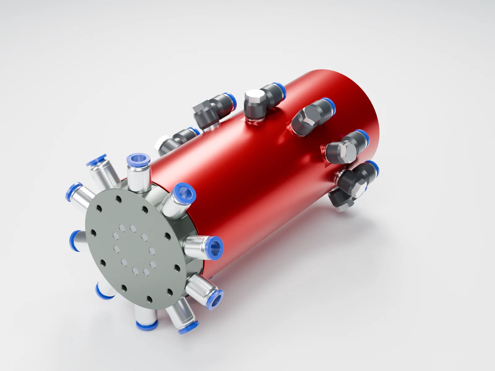

Preventing hose winding starts at the connection between stationary and rotating parts. For limited-angle oscillation, assess hose routing and guidance suited to that motion. For repeated rotation in one direction, a pneumatic rotary union can transfer compressed air from stationary piping to rotating equipment without making the hose across that interface accumulate twist.
Consider a fixture whose hoses wrap around its shaft after a few indexing moves. Straightening them during a stop does not prevent the problem from returning. A longer or softer hose may delay winding, but relative rotation between its fixed and moving ends keeps accumulating while the machine turns in the same direction.
Why do air hoses wind tighter with each turn?
The air supply is usually fixed to the machine frame, while cylinders, grippers or blow-off nozzles may be mounted on a rotary table. When one hose end stays still and the other rotates, the hose must accommodate that relative motion. Without a suitable rotary connection or motion guide, it can twist, wrap around the shaft or be pulled into nearby components.
Winding is more than a housekeeping issue. Fittings can be pulled sideways, and hoses can kink, rub or become trapped, causing leakage, restricted airflow or erratic operation. Bundling hoses organizes their route but does not remove the relative rotation between their ends.
Indexing and stopping can still wind a hose. For example, four 90° indexing moves in the same direction add up to one full turn. A pause does not unwind the hose. Check whether the machine returns to its original angle, not just whether it stops between moves.
Match the air-supply arrangement to the machine’s motion
| Machine motion | What to check first | Possible approach |
|---|---|---|
| Limited-angle oscillation | Does each cycle return to the starting position? At either limit, will the hose stretch tight, kink or rub? | Use tubing suited to the motion and route it according to the manufacturer’s requirements for bend radius, movement allowance and guidance. If the angle, cycle frequency or space makes that impractical, assess a rotary union. |
| One-direction intermittent indexing | Does every move continue in the same direction? Does the accumulated angle keep increasing? | Use a pneumatic rotary union suitable for intermittent duty to accommodate relative rotation inside the connection. Record speed during movement, start frequency and dwell time. |
| Continuous operation in one direction | What are the operating speed, continuous running time, pressure and temperature? | Select a rotary union explicitly suited to the continuous-duty conditions. A maximum-speed figure alone does not establish suitability for prolonged continuous operation. |
For linear reciprocating mechanisms or multi-axis robots, assess energy chains, hose dress packs or other guidance against the travel and motion path. This article focuses on air transfer between a stationary frame and a single rotating axis.
How does a pneumatic rotary union prevent hose winding?
A pneumatic rotary union provides a sealed air path between stationary supply piping and rotating machinery. The stationary side connects to the air supply; the rotating side connects to the actuators moving with the machine. Air travels through internal passages while the two sides rotate relative to each other. Transferring media across that stationary-to-rotating interface is the basic role of a rotary union.
A hose directly bridges the rotating interface
Repeated one-direction rotation makes the hose spanning the interface accumulate twist or wrap around the shaft.
A rotary union connects stationary and rotating piping
Route the piping on each side separately. Rotating-side hoses still need support, guidance and clearance from other components.
Follow the air path in a 22-second animation
- Stationary inlet: The frame-mounted supply line connects to the stationary side of the union.
- Internal transfer: Air moves through the corresponding passage to the rotating side.
- Rotating outlet: Outlet hoses turn with the fixture and supply air for the required pneumatic functions.
The video illustrates the operating principle of the BP-10P-0001 10-passage pneumatic rotary union. Its ten passages can serve separate air circuits; the machine’s pneumatic and valve layout determines their functions.
Animation of the operating principle, with English narration. The fixture is illustrative; use the current drawing on the product page for mounting dimensions.
A rotary union transfers air; it does not drive the table or control cylinder movements. The drive, control valves and actuators remain part of the machine’s functional design. Hose loads also need independent support.
How many passages? Count the circuits crossing the rotating interface
Start with the air circuits that must remain independent. How the circuits for clamping, release, locating-pin actuation and blow-off are grouped depends on valve location and operating logic. Cylinder count alone does not determine passage count.
Control valves on the stationary side
Independently controlled circuits must cross the rotating interface. For example, a double-acting cylinder controlled by a stationary directional valve normally needs a separate path from each cylinder chamber to the valve, so two independent passages are required.
Control valves on the rotating side
A common air supply can cross to the rotating side, where a valve manifold distributes it to the actuators. This may reduce the number of air-supply passages across the interface, but valve power, control signals and exhaust must also be arranged.
After choosing the passage count, also check pressure, speed and duty cycle, airflow, and installation space. When several actuators operate together, flow and pressure drop affect their response; matching the port thread alone is not enough. If shafts or cables must pass through the center, establish whether a through bore is needed.

Ten-passage intermittent-duty example: BP-10P-0001
For intermittently rotating equipment needing ten independent compressed-air circuits and no center through bore.
- Maximum pressure: 1 MPa
- Maximum speed: 100 RPM, intermittent rotation
- Ports: 20 × G1/8, 10 inlet + 10 outlet
- Includes 10 straight and 10 elbow fittings for 8 mm OD tubing
Continuous rotation, hydraulic oil, water or vacuum require a separate selection; do not apply this catalog configuration to those conditions by default.
Four checks after fitting a rotary union
Before adjustments, stop the machine, isolate its energy sources and release residual air pressure. Mount, align and support the assembly according to the machine drawing and union instructions. Do not use the hoses to force the union into position.
- Separate stationary-side and rotating-side routing. Do not let another hose or cable bridge the rotating interface and create a new winding point.
- Allow room for motion. Route rotating-side hoses with the fixture, clear of the frame, tools, workpieces and adjacent hoses. Include the actuator’s own travel in the clearance check.
- Check bends and loads. Follow the tubing’s bend-radius and motion ratings. Avoid torsion, sharp bends and side loads at fittings. Hose installation should prevent machine motion from introducing twist.
- Check the complete operating cycle. Under controlled low-speed conditions, observe the full travel, every station and any reversal. Check for interference and leaks, then verify operating pressure, cycle timing and simultaneous air demand. One smooth turn does not replace a complete-cycle check.
Read the rotary union installation guide →
Air hose twisting: common questions
Will a longer air hose solve the winding problem?
A suitable movement allowance helps within a limited angle. With repeated rotation in one direction, a longer hose still winds up and can increase dragging, snagging or tangling. Address the relative motion between stationary and rotating parts first.
Do I need a rotary union if the machine stops at every station?
Check whether it returns to the original angle. If each move continues in the same direction, the accumulated angle increases and hoses can still wind up. For limited-angle oscillation, first assess the hose movement envelope, guidance and flexing duty.
Can a swiveling air-tube elbow replace a rotary union?
A fitting that turns for installation adjustment is not automatically a dynamic rotary seal. Check whether the manufacturer permits rotation during operation, and at what speed, pressure and duty cycle.
Do ten cylinders always require ten rotary union passages?
No. Count the independent air circuits crossing the rotating interface. Cylinder type, valve location, simultaneous operation and shared air supplies all affect the required passage count.
Does a rotary union prevent every hose from tangling?
It addresses the rotating connection between the fixed air supply and the moving equipment. Route rotating-side hoses and other cables to allow for actuator travel and avoid interference or a second crossing of the rotating interface.
Where are the hoses winding? Send a machine photo.
A machine photo or air-line sketch is enough to start. Mark the fixed and rotating parts and the direction of rotation. If available, include pressure, speed and circuit functions. We can then discuss the air-transfer arrangement and recommend a suitable model.
Further reading: Parker hose installation and safety guide (PDF)